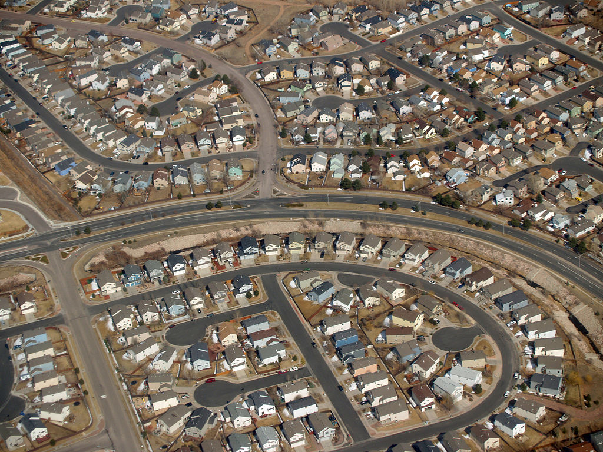

Lebens und Wirtschaftsraum Erde
3.3.Stadtwachstum - Stadtentwicklung
Seit dem 19. Jahrhundert gewinnen Städte immer mehr an Bedeutung.
Während der
Industriellen Revolution
zogen viele Menschen vom Land in die Stadt. In der Stadt gab es viele Arbeitsplätze, Städte wurden zunehmend zu Zentren des Handels, der Produktion, der Verwaltung und waren die Knotenpunkte des kulturellen Lebens. Diese Phase der Stadtentwicklung nennt man
Urbanisierung
.(Abb.3.3.1)
In der Hochphase der Urbansierung begannen immer mehr Menschen, sich
Sommerresidenzen
auf dem Land zu errichten. Dies war zu Beginn der Oberschicht vorbehalten. Sie entschlossen sich im Grünen (Beispiel Wien 19. JH: Oberdöbling, Hietzing) einen Zweitwohnsitz zu errichten. Im Laufe der Zeit folgten diesem Beispiel immer mehr Menschen und so entstanden eigenständige Wohnvororte für Wohlhabende. Diese Phase wird
Suburbanisierung
genannt.(Abb.3.3.2)
Verschieden Ursachen können dazu führen, dass die Kernstadt immer mehr an Attraktivität verliert. (Abbau von Arbeitsplätzen, mangelnde Infrastruktur, Trend zu gesünderem Lebensstil, etc.) Dies resultiert in einer neuen Phase der Stadtentwicklung, der
Desurbanisierung
. Bei der Desurbanisierung steigen die Einwohnerzahlen kleiner Städte und Gemeinden und die Einwohnerzahlen der Stadt sinken. An die Phase der Desurbanisierung schließt die sogenannte
Reurbanisierung
an, in der Städte wieder an Bedeutung gewinnen.(Abb.3.3.3)
3_3_1 - Donaucity Wien
3_3_2 - Villa Hietzing

3_3_3 - Suburbane Siedlung USA